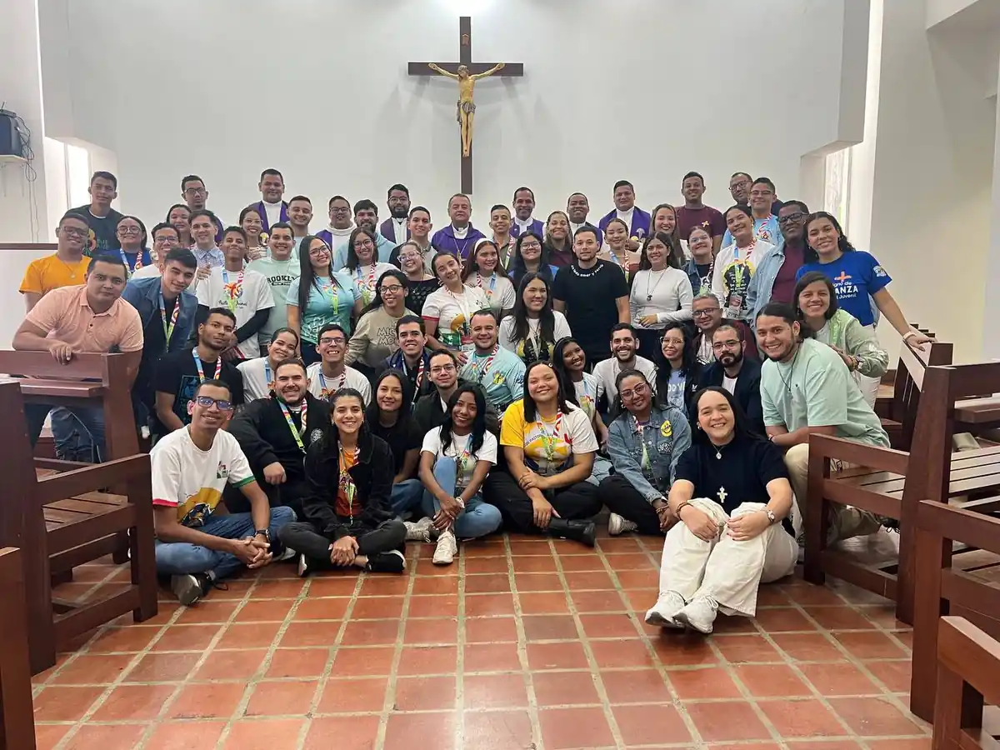
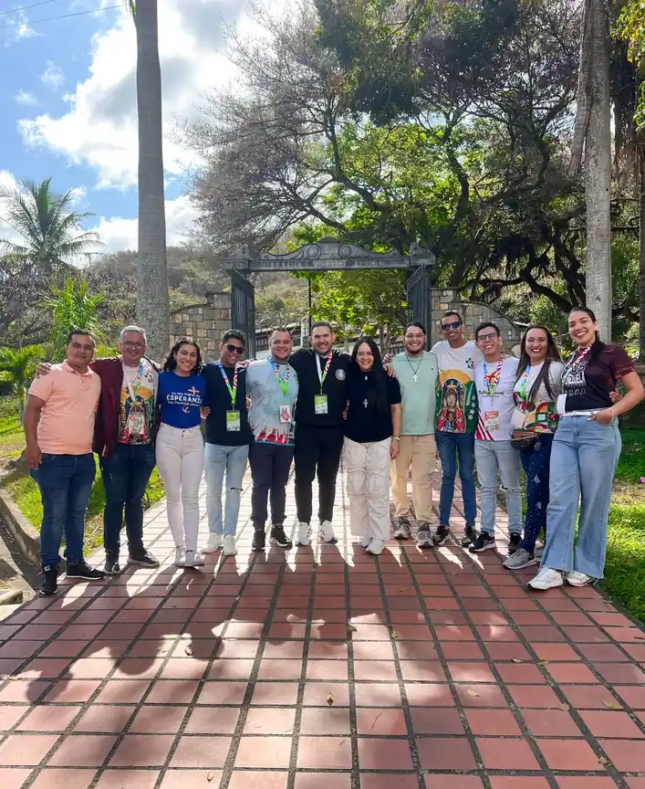

Juventud
Asambleas de Pastoral Juvenil
La Asamblea Nacional de Pastoral Juvenil es el espacio donde se define el camino de la pastoral juvenil del país.

Qué es
Según el sitio actual del Centro, reúne a jóvenes delegados de las arquidiócesis, diócesis y vicariatos, de las pastorales específicas de juventud, de congregaciones religiosas con carisma juvenil, de movimientos eclesiales y de nuevas comunidades juveniles. También asisten asesores, representantes de los equipos de apoyo y de los servicios de formación, y miembros de la Comisión Nacional.
Es el mayor ámbito de decisión de la pastoral juvenil. Allí se profundiza la propuesta, se eligen las opciones pedagógicas y metodológicas, se elaboran los planes nacionales y nacen los proyectos para evangelizar a los jóvenes.
Con qué frecuencia
El sitio explica que, según la realidad de cada lugar, puede reunirse cada año o cada dos o tres años. Exige mucha preparación, muchos delegados y tiempo para aplicar y evaluar las decisiones.
Ediciones recientes
- 35.ª Asamblea, del 17 al 20 de febrero de 2022, en Los Teques (según la CEV).
- 39.ª Asamblea, en febrero de 2026: la nota del 23 de febrero habla de 34 diócesis presentes y del lema «Vayan a reparar las redes».
Galería

Grupo numeroso de participantes de la Asamblea Nacional de Pastoral Juvenil 2026 posando al aire libre, sentados y de pie sobre un patio de ladrillo, con palmeras y cerros de fondo.. Crédito: Centro de Laicos, Familia y Juventud, CEV. 
Fila de participantes de pastoral juvenil posando de pie a lo lejos sobre un patio de ladrillo entre árboles.. Crédito: Centro de Laicos, Familia y Juventud, CEV.